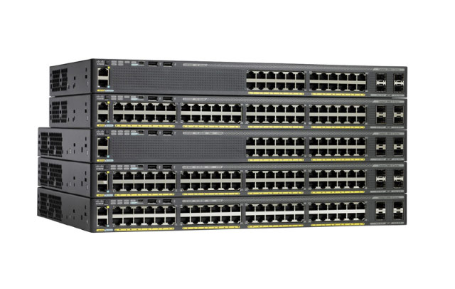
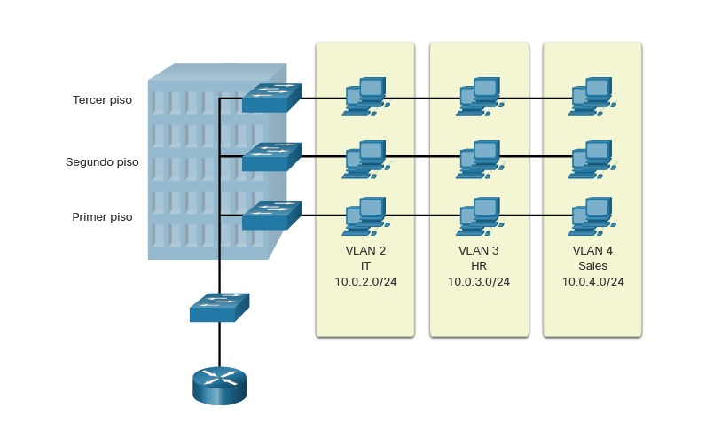

11.1.1 Dispositivos finales
Los dispositivos de red con los que las personas están más familiarizadas se denominan dispositivos finales. Para distinguir un dispositivo final de otro, cada dispositivo final de una red tiene una dirección. Cuando un dispositivo final inicia la comunicación, utiliza la dirección del dispositivo final de destino para especificar dónde entregar el mensaje.
Un terminal es el origen o el destino de un mensaje transmitido a través de la red.
Haga clic en el botón Reproducir de la figura para ver una animación del flujo de datos por una red.
11.1.2 Video - Dispositivos finales
Observe el video para aprender más acerca de dispositivos finales
11.1.3 Routers
Los routers son dispositivos que operan con la capa de red del modelo OSI (Capa 3). Como se muestra en la figura, los routeres se utilizan para interconectar sitios remotos. Utilizan el proceso de enrutamiento para reenviar los paquetes de datos entre redes. El proceso de enrutamiento utiliza tablas de enrutamiento, protocolos y algoritmos de red para determinar la ruta más eficiente para el reenvío de un paquete IP. Los routers reúnen información de enrutamiento y notifican a otros routers sobre los cambios en la red, y aumentan la escalabilidad de las redes mediante la segmentación de dominios de difusión.
Conexión del router

Además, los routers tienen dos funciones principales: determinar rutas y reenviar paquetes. Para determinar una ruta, cada router crea y mantiene una tabla de enrutamiento, que es una base de datos de redes conocidas y de cómo llegar a ellas. La tabla de enrutamiento puede crearse manualmente y contener rutas estáticas, o puede crearse usando un protocolo de enrutamiento dinámico.
El reenvío de paquetes se logra mediante una función de switching. El switching es el proceso utilizado por un router para aceptar un paquete en una interfaz y reenviarlo hacia otra interfaz. Una responsabilidad principal de la función de switching es la de encapsular los paquetes en el tipo de marco de enlace de datos correcto para el enlace de datos de salida.
Reproduzca la animación de los routers R1 y R2 recibiendo el paquete de una red y reenviando el paquete hacia la red de destino.
Una vez que el router determinó la interfaz de salida mediante la función de determinación de rutas, el router debe encapsular el paquete en la trama de enlace de datos de la interfaz de salida.
¿Qué hace un router cuando recibe un paquete desde una red que está destinado a otra red? El router ejecuta los siguientes tres pasos principales:
Como se muestra en la figura, los dispositivos tienen IPv4 de capa 3, mientras que las interfaces Ethernet tienen direcciones de enlace de datos de capa 2. Las direcciones MAC se acortan para simplificar el ejemplo. Por ejemplo, la PC1 se configuró con la dirección IPv4 192.168.1.10 y una dirección MAC de ejemplo 0A-10. A medida que un paquete se desplaza desde el dispositivo de origen hacia el dispositivo de destino final, las direcciones IP de capa 3 no se modifican. Esto se debe a que la PDU de la capa 3 no cambia. Sin embargo, las direcciones de enlace de datos de la capa 2 cambian en cada router mientras recorren la ruta al destino, a medida que se desencapsula y vuelve a encapsular el paquete en un nuevo marco de la capa 2.
Encapsulación y desencapsulación de paquetes

11.1.4 Verifique su conocimiento - Coincida con direccionamiento de capa 2 y capa 3
En esta actividad, se les proporciona una trama en blanco para que la armen según la situación. Determine las direcciones MAC de destino y de origen, así como las direcciones IP de origen y de destino, con las que se armaría la trama en forma correcta según lo especificado. Introduzca sus respuestas seleccionando la opción en cada menú desplegable para los campos apropiados.
Escenario 1 — PC1 está enviando datos a PC2 — todos los dispositivos están completos ARP. En este marco, indique el comienzo del tráfico de datos para el armado de la trama de la PC1. No se utilizarán todas las respuestas.

11.1.5 Proceso de decisión de reenvío de paquetes
Ahora que el router ha determinado la mejor ruta para un paquete en función de la coincidencia más larga, debe determinar cómo encapsular el paquete y reenviarlo hacia fuera la interfaz de salida correcta.
La figura explica cómo un router determina la mejor ruta para reenviar un paquete.

Reenvía el paquete a un dispositivo en una red conectada directamente
Si la entrada de ruta indica que la interfaz de salida es una red conectada directamente, esto significa que la dirección IP de destino del paquete pertenece a un dispositivo de la red conectada directamente. Por lo tanto, el paquete se puede reenviar directamente al dispositivo de destino. El dispositivo de destino suele ser un dispositivo final en una LAN Ethernet, lo que significa que el paquete debe estar encapsulado en una trama Ethernet.
Para encapsular el paquete en la trama Ethernet, el router necesita determinar la dirección MAC de destino asociada a la dirección IP de destino del paquete. El proceso varía según si el paquete es un paquete IPv4 o IPv6:
Paquete IPv4 - El router comprueba su tabla ARP para la dirección IPv4 de destino y una dirección MAC Ethernet asociada. Si no hay coincidencia, el router envía una solicitud ARP. El dispositivo de destino devolverá una respuesta ARP con su dirección MAC. El router ahora puede reenviar el paquete IPv4 en una trama Ethernet con la dirección MAC de destino adecuada.
PaqueteIPv6 - El router comprueba su caché vecino para la dirección IPv6 de destino y una dirección MAC Ethernet asociada. Si no hay coincidencia, el router envía un mensaje ICMPv6 Solicitud de vecino (ICMPv6 Neighbor Solicitation) (NS). El dispositivo de destino devolverá un mensaje ICMPv6 Neighbor Advertisement (NA) con su dirección MAC. El router ahora puede reenviar el paquete IPv6 en una trama Ethernet con la dirección MAC de destino adecuada.
Reenvía el paquete a un router de salto siguiente
Si la entrada de ruta indica que la dirección IP de destino está en una red remota, esto significa que la dirección IP de destino del paquete pertenece a un dispositivo de red que no está conectado directamente. Por lo tanto, el paquete debe ser reenviado a otro enrutador, específicamente a un router de siguiente salto. La dirección de salto siguiente se indica en la entrada de ruta.
Si el router de reenvío y el router de siguiente salto se encuentran en una red Ethernet, se producirá un proceso similar (ARP e ICMPv6 Neighbor Discovery) para determinar la dirección MAC de destino del paquete como se describió anteriormente. La diferencia es que el router buscará la dirección IP del router de salto siguiente en su tabla ARP o caché de vecino, en lugar de la dirección IP de destino del paquete.
Nota: Este proceso variará para otros tipos de redes de capa 2.
Descarta el paquete - No coincide en la tabla de enrutamiento
Si no hay ninguna coincidencia entre la dirección IP de destino y un prefijo en la tabla de enrutamiento, y si no hay una ruta predeterminada, se descartará el paquete.
11.1.6 Información de enrutamiento
La tabla de enrutamiento de un router almacena información sobre lo siguiente:
Concretamente, una tabla de enrutamiento es un archivo de datos que se encuentra en la RAM y se utiliza para almacenar información de rutas sobre redes remotas y conectadas directamente. La tabla de enrutamiento contiene asociaciones de red o de siguiente salto. Estas asociaciones le indican al router que un destino en particular se puede alcanzar de forma óptima si se envía el paquete hacia un router en particular que representa el siguiente salto en el camino hacia el destino final. La asociación del siguiente salto también puede ser la interfaz de salida hacia el siguiente destino.
En la ilustración, se identifican las redes conectadas directamente y las redes remotas del router R1.
Rutas de redes directamente conectadas y de redes remotas

Las entradas de la red de destino en la tabla de enrutamiento se pueden agregar de varias maneras:
Los protocolos de enrutamiento dinámico intercambian información de accesibilidad de la red entre los routers y se adaptan de manera dinámica a los cambios en la red. Cada protocolo de enrutamiento utiliza algoritmos de enrutamiento para determinar las mejores rutas entre diferentes segmentos de la red y actualiza las tablas de enrutamiento con estas rutas.
Los protocolos de enrutamiento dinámico se utilizan en el ámbito de las redes desde finales de la década de los ochenta. Uno de los primeros protocolos de enrutamiento fue RIP. RIPv1 fue publicado en 1988. A medida que las redes evolucionaron y se volvieron más complejas, surgieron nuevos protocolos de enrutamiento. El protocolo RIP se actualizó a RIPv2 para hacer lugar al crecimiento en el entorno de red. Sin embargo, RIPv2 aún no se escala a las implementaciones de red de mayor tamaño de la actualidad. Con el objetivo de satisfacer las necesidades de las redes más grandes, se desarrollaron dos protocolos de enrutamiento: el protocolo OSPF (abrir primero la ruta más corta) y sistema intermedio a sistema intermedio (IS-IS). Cisco desarrolló el protocolo de enrutamiento de gateway interior (IGRP) e IGRP mejorado (EIGRP), que también tiene buena escalabilidad en implementaciones de redes más grandes.
Asimismo, surgió la necesidad de conectar distintas redes y proporcionar enrutamiento entre ellas. En la actualidad, se utiliza el protocolo de gateway fronterizo (BGP) entre proveedores de servicios de Internet (ISP). El protocolo BGP también se utiliza entre los ISP y sus clientes privados más grandes para intercambiar información de enrutamiento.
La tabla clasifica los protocolos. Los routers configurados con estos protocolos enviarán periódicamente mensajes a otros routers. Como analista de ciberseguridad, verá estos mensajes en una variedad de registros y capturas de paquetes.
|
Protocolo |
Protocolos de gateway interior |
Protocolos de gateway exterior |
|||
|---|---|---|---|---|---|
|
Vector distancia |
Estado de enlace |
Vector ruta |
|||
|
IPv4 |
RIPv2 |
EIGRP |
OSPFv2 |
Sistema intermedio a sistema intermedio (IS-IS) |
BGP-4 |
|
IPv6 |
RIPng |
EIGRP para IPv6 |
OSPFv3 |
IS-IS para IPv6 |
BGP-MP |
11.1.7 Reenvío de paquetes
Una responsabilidad principal de la función de switching es la de encapsular los paquetes en el tipo de marco de enlace de datos correcto para el enlace de datos de salida. Por ejemplo, el formato de trama de vínculo de serie podría ser el protocolo punto a punto (PPP), el protocolo de control de enlace de datos de alto nivel (HDLC) o algún otro protocolo de capa 2.
PC1 envía paquete a PC2
En la primera animación, PC1 envía un paquete a PC2. Ya que la PC2 está en una red diferente, la PC1 reenviará los paquetes a su puerta de enlace predeterminada (gateway). PC1 buscará en su caché ARP la dirección MAC de gateway predeterminada y agregará la información de trama indicada.
Nota: Si una entrada de ARP no existe en la tabla de ARP para la puerta de enlace predeterminada (gateway) de 192.168.1.1, la PC1 enviará una solicitud de ARP El router R1 envía a cambio una respuesta ARP con su dirección MAC.
El R1 reenvía el paquete a la PC2
R1 ahora reenvía el paquete a PC2. Debido a que la interfaz de salida se encuentra en una red Ethernet, el R1 debe resolver la dirección IPv4 de siguiente salto con una dirección MAC de destino mediante ARP: Si no existe ninguna entrada ARP para la interfaz del proximo salto 192.168.2.2 en la tabla ARP, R1 envía una solicitud de ARP. R2 devolvería una respuesta ARP.
El R2 reenvía el paquete al R3
R2 ahora reenvía el paquete a R3. Debido a que la interfaz de salida no es una red Ethernet, el R2 no tiene que resolver la dirección IPv4 del siguiente salto con una dirección MAC de destino. Cuando la interfaz es una conexión serial punto a punto (P2P), el router encapsula el paquete IPv4 en el formato de trama de enlace de datos correspondiente que utiliza la interfaz de salida (HDLC, PPP, etc.). Debido a que no hay direcciones MAC en las interfaces seriales, el R2 establece la dirección de destino de enlace de datos en el equivalente a una difusión.
El R3 reenvía el paquete a la PC2
R3 ahora reenvía el paquete a PC2. Dado que la interfaz de salida es una red Ethernet conectada directamente, el R3 debe resolver la dirección IPv4 de destino del paquete con una dirección MAC de destino: Si la entrada no aparece en la caché ARP, el R3 envía una solicitud de ARP por la interfaz FastEthernet 0/0. La PC2 envía a cambio una respuesta ARP con su dirección MAC.
11.1.8 Video - Enrutamiento estático y dinámico
Reproduzca el vídeo para aprender sobre el enrutamiento estático y dinámico.
11.1.9 Concentradores, puentes y switches de LAN
Los iconos de topología para hubs, bridges y switches LAN se muestran en la figura.

Un hub de Ethernet actúa como un repetidor multipuerto que recibe una señal eléctrica entrante (datos) en un puerto. Luego, reenvía inmediatamente una señal regenerada a todos los demás puertos. Los hubs utilizan procesamiento de capa física para reenviar datos. No tienen en cuenta la dirección MAC de origen ni destino de la trama de Ethernet. Los hubs conectan la red en una topología de estrella con el concentrador como punto de conexión central. Cuando dos o más terminales conectados a un hub envían datos al mismo tiempo, ocurre una colisión eléctrica que daña las señales. Todos los puertos conectados a un hub pertenecen al mismo dominio de colisión. En dicho dominio, solamente un dispositivo puede transmitir tráfico en un momento dado. Si ocurre una colisión, los terminales utilizan la lógica CSMA/CD para evitar la transmisión hasta que la red esté libre de tráfico. Debido al bajo costo y superioridad de la conmutación Ethernet, los hubs rara vez se utilizan hoy en día.
Los bridges tienen dos interfaces y están conectados entre concentradores para dividir la red en varios dominios de colisión. Cada dominio de colisión puede tener solamente un remitente en un momento dado. Las colisiones se aíslan en un solo segmento usando el bridge y no afectan a los dispositivos en otros segmentos. Al igual que un switch, un bridge toma decisiones de reenvío en función de las direcciones MAC de Ethernet. Los bridges rara vez se usan en redes modernas.
Los switches de LAN son, en definitiva, bridges multipuerto que conectan dispositivos en una topología de estrella. Al igual que los bridges , los switches segmentan una red LAN en dominios de colisión separados, uno para cada puerto del switch. Un switch toma decisiones de reenvío sobre la base de direcciones MAC. En la figura, se ve la serie de switches 2960-X de Cisco que suele usarse para conectar terminales en una red LAN.

11.1.10 Funcionamiento del switching
Los switches usan direcciones MAC para dirigir las comunicaciones de red a través del switch al puerto correspondiente y hacia el destino. Un switch se compone de circuitos integrados y del software complementario que controla las rutas de datos a través del switch. Para definir qué puerto usar para transmitir una trama, el switch primero debe saber qué dispositivos existen en cada puerto. A medida que el switch descubre la relación entre puertos y dispositivos, crea una tabla denominada “tabla de direcciones MAC” o “tabla de memoria de contenido direccionable (CAM)”. CAM es un tipo de memoria especial que se usa en las aplicaciones de búsqueda de alta velocidad.
Los switches LAN determinan cómo manejar las tramas de datos entrantes mediante una tabla de direcciones MAC. El switch genera la tabla de direcciones MAC mediante el registro de la dirección MAC de cada dispositivo que está conectado a cada uno de los puertos. El switch usa la información de la tabla de direcciones MAC para enviar las tramas a su específico dispositivo de destino por el puerto que el dispositivo tiene conectado.
El siguiente proceso de dos pasos se realiza para cada trama de Ethernet que ingresa a un switch.
1. Aprendizaje: Examinar la dirección MAC de origen
Se revisa cada trama que ingresa a un switch para obtener información nueva que necesita ser aprendida. Esto se realiza examinando la dirección MAC de origen de la trama y el número de puerto por el que la trama ingresó al switch. Si la dirección MAC de origen no se encuentra en la tabla, esa se agrega a la tabla de direcciones MAC junto con el número de puerto de entrada, como se muestra en la figura. Si la dirección MAC de origen existe en la tabla, el switch actualiza el temporizador de actualización para esa entrada. De manera predeterminada, la mayoría de los switches Ethernet guardan una entrada en la tabla durante cinco minutos.
Aprendizaje: Examinar la dirección MAC de origen

Nota: Si la dirección MAC de origen existe en la tabla, pero en un puerto diferente, el switch la trata como una entrada nueva. La entrada se reemplaza con la misma dirección MAC, pero con el número de puerto más actual.
2. Reenvío: Examinar la dirección MAC de destino
Si la dirección MAC de destino es una dirección de unidifusión, el switch busca una coincidencia entre la dirección MAC de destino de la trama y una entrada en la tabla de direcciones MAC. Si la dirección MAC de destino está en la tabla, reenvía la trama por el puerto especificado. Si la dirección MAC de destino no está en la tabla, el switch reenvía la trama a todos los puertos, salvo el de entrada, como se ve en la Figura. Esto se conoce como unidifusión.
Reenvío: Examinar la dirección MAC de destino

Nota: Si la dirección MAC de destino es de difusión o multidifusión, la trama también se envía a todos los puertos, salvo el de entrada.
11.1.11 Video - Tablas de direcciones MAC en switches conectados
Un switch puede tener muchas direcciones MAC asociadas a un solo puerto. Esto es común cuando el switch está conectado a otro switch. El switch tiene una entrada independiente en la tabla de direcciones MAC para cada trama recibida con una dirección MAC de origen diferente.
Reproduzca el video para ver una demostración de cómo dos switches conectados crean sus tablas de drecciones MAC.
11.1.12 VLAN
Dentro de un entorno de red conmutada, las VLAN proporcionan la segmentación y la flexibilidad organizativa. Las VLAN proporcionan una manera de agrupar dispositivos dentro de una LAN. Un grupo de dispositivos dentro de una VLAN se comunica como si estuvieran conectados al mismo segmento de red. Las VLAN se basan en conexiones lógicas, en lugar de conexiones físicas.

Las VLAN permiten que el administrador segmente las redes según factores como la función, el equipo del proyecto o la aplicación, independientemente de la ubicación física del usuario o el dispositivo, como se ve en la figura. Los dispositivos dentro de una VLAN funcionan como si estuvieran en su propia red independiente, aunque compartan una misma infraestructura con otras VLAN. Cualquier puerto de switch puede pertenecer a una VLAN. Los paquetes de unidifusión, difusión y multidifusión se reenvían solamente a terminales dentro de la VLAN donde los paquetes son de origen. Cada VLAN se considera una red lógica diferente. Los paquetes destinados a dispositivos que no pertenecen a la VLAN se deben reenviar mediante un dispositivo compatible con enrutamiento.
Una VLAN crea un dominio de difusión lógico que puede abarcar varios segmentos LAN físicos. Las VLAN mejoran el rendimiento de la red mediante la división de grandes dominios de difusión en otros más pequeños. Si un dispositivo en una VLAN envía una trama de Ethernet de difusión, todos los dispositivos en la VLAN reciben la trama, pero los dispositivos en otras VLAN no la reciben.
Las redes VLAN también evitan que los usuarios en VLAN diferentes espíen el tráfico de los demás. Por ejemplo, a pesar de que los departamentos de Recursos Humanos y de Ventas están conectados al mismo switch en la figura, el switch no reenviará tráfico entre las VLAN de ambos departamentos. Esto permite que un router u otro dispositivo use las listas de control de acceso para permitir o denegar el tráfico. Las listas de acceso se analizan con mayor detalle más adelante en este capítulo. Por ahora, solo es importante recordar que las VLAN pueden ayudar a limitar la cantidad de visibilidad de datos en las redes LAN.
11.1.13 STP
La redundancia de red es clave para mantener la confiabilidad de la red. Varios enlaces físicos entre dispositivos proporcionan rutas redundantes. De esta forma, la red puede continuar funcionando si falló un único enlace o puerto. Los enlaces redundantes también pueden compartir la carga de tráfico y aumentar la capacidad.
Se deben administrar varias rutas para que no se produzcan bucles en la capa 2. Se eligen las mejores rutas, y se cuenta con una ruta alternativa de inmediato en caso de que falle una ruta principal. El protocolo de árbol de expansión se utiliza para mantener una ruta libre de bucles en la red de capa 2 en cualquier momento.
La redundancia aumenta la disponibilidad de la topología de red al proteger la red de un único punto de falla, como un cable de red o switch que fallan. Cuando se introduce la redundancia física en un diseño, se producen bucles y se duplican las tramas. Esto trae consecuencias graves para las redes conmutadas. STP fue desarrollado para resolver estos problemas.
STP asegura que exista sólo una ruta lógica entre todos los destinos de la red, al realizar un bloqueo de forma intencional a aquellas rutas redundantes que puedan ocasionar un bucle. Se considera que un puerto está bloqueado cuando no se permite que entren o salgan datos de usuario por ese puerto. Esto no incluye las tramas de unidad de datos de protocolo puente (BPDU) utilizadas por STP para evitar bucles. El bloqueo de las rutas redundantes es fundamental para evitar bucles en la red. Las rutas físicas aún existen para proporcionar la redundancia, pero las mismas se deshabilitan para evitar que se generen bucles. Si alguna vez la ruta es necesaria para compensar la falla de un cable de red o de un switch, STP vuelve a calcular las rutas y desbloquea los puertos necesarios para permitir que la ruta redundante se active.
11.1.14 Switch multicapa
Los switches multicapa (también conocidos como switches de Capa 3) no solo tienen a su cargo el switching de Capa 2 sino que también reenvían tramas en función de la información de las capas 3 y 4. Todos los switches multicapa Cisco Catalyst admiten los siguientes tipos de interfaces de capa 3:
Puertos enrutados
Un puerto enrutado es un puerto físico que funciona de manera similar a una interfaz en un router, como se muestra en la figura. A diferencia de los puertos de acceso, los puertos enrutados no se asocian a una VLAN determinada. Los puertos enrutados se comportan como una interfaz del router normal. Además, debido a la eliminación de la funcionalidad de capa 2, los protocolos de capa 2 (tales como STP), no funcionan en interfaces enrutadas. Sin embargo, algunos protocolos, como LACP y EtherChannel, funcionan en la capa 3. A diferencia de los routers IOS de Cisco, los puertos enrutados en un switch IOS de Cisco no admiten subinterfaces.
Puertos enrutados

Interfaces virtuales de switch
Una SVI es una interfaz virtual configurada en un switch multicapa, como se muestra en la figura. A diferencia de los switches de capa 2 básicos mencionados antes, un interruptor multicapa puede tener varias SVI. Se puede crear una SVI para cualquier VLAN que exista en el switch. Una SVI se considera virtual porque no hay un puerto físico dedicado a la interfaz. Puede realizar las mismas funciones para la VLAN que una interfaz del router y puede configurarse de manera similar a una interfaz tal (es decir, dirección IP, ACL de entrada y de salida, etcétera). La SVI para la VLAN proporciona procesamiento de capa 3 para los paquetes que provienen de todos los puertos de switch asociados a dicha VLAN o que se dirigen a ella.
Interfaz virtual del switch